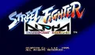
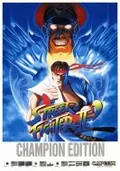
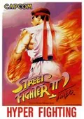
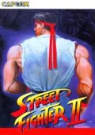
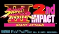
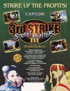
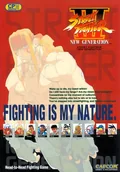
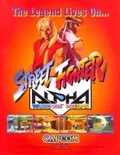
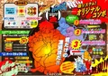
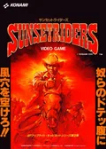

73 Street Fighter Alpha 3 arriba Y X L = puñetazo flojo, medio y fuerte; abajo B A R = patada floja, media y fuerte. Mirar también el J2.
Otras dudas de la guía (1; no hace falta buscarlas) ⚠️ Según StrategyWiki, en la recreativa estos secretos se desbloquean con el tiempo de uso de la máquina: el color de la pantalla de título dice cuáles hay (de crema, sin nada, a azul claro, con todo). Botones Dar una patada floja Dar una patada media Dar una patada fuerte Dar un puñetazo flojo Dar un puñetazo medio Dar un puñetazo fuerte Empezar Meter una moneda + Salir del juego
Ver ficha y guía → ✅ Bien ⚠️ Problema ⏭️ Luego
74 
Street Fighter Alpha: Warriors' Dreams arriba Y X L = puñetazo flojo, medio y fuerte; abajo B A R = patada floja, media y fuerte. Mirar también el J2.
Botones Dar una patada floja Dar una patada media Dar una patada fuerte Dar un puñetazo flojo Dar un puñetazo medio Dar un puñetazo fuerte Empezar Meter una moneda + Salir del juego
Ver ficha y guía → ✅ Bien ⚠️ Problema ⏭️ Luego
75 
Street Fighter II': Champion Edition arriba Y X L = puñetazo flojo, medio y fuerte; abajo B A R = patada floja, media y fuerte. Mirar también el J2.
Botones Dar una patada floja Dar una patada media Dar una patada fuerte Dar un puñetazo flojo Dar un puñetazo medio Dar un puñetazo fuerte Empezar Meter una moneda + Salir del juego
Ver ficha y guía → ✅ Bien ⚠️ Problema ⏭️ Luego
76 
Street Fighter II': Hyper Fighting arriba Y X L = puñetazo flojo, medio y fuerte; abajo B A R = patada floja, media y fuerte. Mirar también el J2.
Botones Dar una patada floja Dar una patada media Dar una patada fuerte Dar un puñetazo flojo Dar un puñetazo medio Dar un puñetazo fuerte Empezar Meter una moneda + Salir del juego
Ver ficha y guía → ✅ Bien ⚠️ Problema ⏭️ Luego
77 
Street Fighter II: The World Warrior arriba Y X L = puñetazo flojo, medio y fuerte; abajo B A R = patada floja, media y fuerte. Mirar también el J2.
Botones Dar una patada floja Dar una patada media Dar una patada fuerte Dar un puñetazo flojo Dar un puñetazo medio Dar un puñetazo fuerte Empezar Meter una moneda + Salir del juego
Ver ficha y guía → ✅ Bien ⚠️ Problema ⏭️ Luego
78 
Street Fighter III 2nd Impact: Giant Attack arriba Y X L = puñetazo flojo, medio y fuerte; abajo B A R = patada floja, media y fuerte. Mirar también el J2.
Botones Dar una patada floja Dar una patada media Dar una patada fuerte Dar un puñetazo flojo Dar un puñetazo medio Dar un puñetazo fuerte Empezar Meter una moneda + Salir del juego
Ver ficha y guía → ✅ Bien ⚠️ Problema ⏭️ Luego
79 
Street Fighter III 3rd Strike: Fight for the Future arriba Y X L = puñetazo flojo, medio y fuerte; abajo B A R = patada floja, media y fuerte. Mirar también el J2.
Botones Dar una patada floja Dar una patada media Dar una patada fuerte Dar un puñetazo flojo Dar un puñetazo medio Dar un puñetazo fuerte Empezar Meter una moneda + Salir del juego
Ver ficha y guía → ✅ Bien ⚠️ Problema ⏭️ Luego
80 
Street Fighter III: New Generation arriba Y X L = puñetazo flojo, medio y fuerte; abajo B A R = patada floja, media y fuerte. Mirar también el J2.
Botones Dar una patada floja Dar una patada media Dar una patada fuerte Dar un puñetazo flojo Dar un puñetazo medio Dar un puñetazo fuerte Empezar Meter una moneda + Salir del juego
Ver ficha y guía → ✅ Bien ⚠️ Problema ⏭️ Luego
81 
Street Fighter Zero arriba Y X L = puñetazo flojo, medio y fuerte; abajo B A R = patada floja, media y fuerte. Mirar también el J2.
Botones Dar una patada floja Dar una patada media Dar una patada fuerte Dar un puñetazo flojo Dar un puñetazo medio Dar un puñetazo fuerte Empezar Meter una moneda + Salir del juego
Ver ficha y guía → ✅ Bien ⚠️ Problema ⏭️ Luego
82 
Street Fighter Zero 2 Alpha arriba Y X L = puñetazo flojo, medio y fuerte; abajo B A R = patada floja, media y fuerte. Mirar también el J2.
Otras dudas de la guía (1; no hace falta buscarlas) ⚠️ El vídeo de «Vídeos» no está dividido por combates. Botones Dar una patada floja Dar una patada media Dar una patada fuerte Dar un puñetazo flojo Dar un puñetazo medio Dar un puñetazo fuerte Empezar Meter una moneda + Salir del juego
Ver ficha y guía → ✅ Bien ⚠️ Problema ⏭️ Luego
que B ataque y A salte. ¿Hace algo R? Según las guías solo hay dos botones (atacar y saltar): seguramente R no hace nada. Abajo + A se desliza.
🔎 Mirar en la bartop:
¿A dos se juega a la vez o por turnos ? Botones Atacar Saltar Por confirmar Empezar Meter una moneda + Salir del juego
Ver ficha y guía → ✅ Bien ⚠️ Problema ⏭️ Luego
84 
Sunset Riders que B dispare y A salte, y que los dos jugadores jueguen a la vez. Según las guías: B dispara (en 8 direcciones) y A salta; arriba o abajo + A cambia de piso y abajo en diagonal + A se desliza.
🔎 Mirar en la bartop:
En la de cuatro, cada personaje va fijo en un puesto del mueble (Steve, Billy, Bob y Cormano, en ese orden); en la de dos, se elige. ⚠️ Sin comprobar cuál es la de la bartop (ssriders). 🔎 Mirar si al empezar se elige personaje o si el J1 es siempre Steve y el J2, Billy. Botones Disparar (⚠️ confirmar) Saltar (⚠️ confirmar) Empezar Meter una moneda + Salir del juego
Ver ficha y guía → ✅ Bien ⚠️ Problema ⏭️ Luego
No hay pruebas con este filtro.